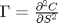
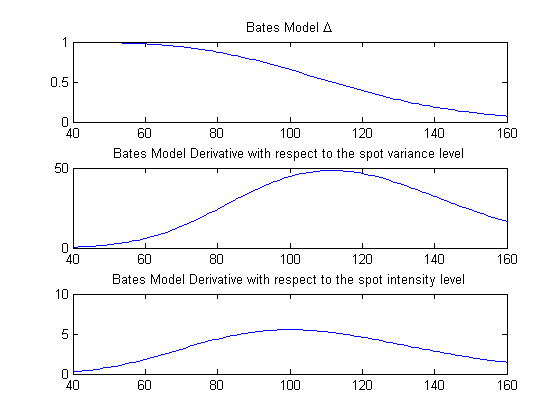

cf2call
Compute call option prices from characteristic function. Part of the CFH Toolbox.
Syntax
[C K] = CF2CALL(CF) [C K] = CF2CALL(CF,AUX) [C K] = CF2CALL(CF,AUX,PAR) [C K] = CF2CALL(CF,[],PAR)
Given a characteristic function CF, returns call option prices C and corresponding strikes K.
Input Arguments
The characteristic function CF should expect the real argument u and return the corresponding characteristic function
AUX is a structure containing optional parameters for the Fourier transform.
- aux.N denotes the number of points for FRFT evaluation, default 8192
- aux.uMax is the range of integration of the characteristic function, default 100
- aux.damp is the damping parameter required by the Carr/Madan approach, default 1.5
- aux.dx is the discretization of the log strike range, default value 2/N
- aux.x0 contains the log of spot underlying, default zero
- aux.K is a vector of strike evaluation points
PAR is an additional structure that passes parameters to the characteristic function if required.
Contents
Example 1: Black Scholes
In the Black Scholes model, the risk neutral dynamics of the logarithmic spot process are:
resulting in the characteristic function
where .
The FFT option pricing approach of Carr/Madan rapipdly evaluates the option price as an Fourier transform of the underlying characteristic function, where the logarithm of the strike price:
The characteristic function of the Black Scholes model is also included in cflib, using the argument type='BS'.
rf = 0.05; tau = 1; sigma = 0.25; S0 = 100; x0 = log(S0); cfBS = @(u) exp(-rf*tau + i*u*x0 + i*u*(rf-1/2*sigma^2)*tau - 1/2*u.^2*sigma^2*tau);
Within the discretely spaced strike range K=[40:160], we obtain
K = [40:160]'; aux.K = K; aux.x0 = x0; CBS = cf2call(cfBS,aux);
As a check, we test whether the option price obeys the no-arbitrage bound
bounds = max(S0-K*exp(-rf*tau),0); plot(K,[bounds CBS]); title('Black Scholes option prices'); legend('Arbitrage bounds','Black Scholes prices'); xlim([80 120]); xlabel('Strike'); ylabel('Option Price');
Example 2: Heston's stochastic volatility model
In Heston's stochastic volatility model, the risk neutral dynamics of the logarithmic spot process and the variance process are
where
The corresponding characteristic function is included in cflib using argument type='Heston'.
Let us assume in addition to example 1
v0 = 0.25^2; kappaV = 0.85; thetaV = 0.30^2; sigmaV = 0.1; rho = -0.7;
Translating this into the fields of the par structure required by cflib, we obtain
par.x0 = x0; par.v0 = v0; par.rf = rf; par.kappa = kappaV; par.theta = thetaV; par.sigma = sigmaV; par.rho = rho; aux.x0 = x0; cfHes = @(u) cflib(u,tau,par,'Heston'); CHes = cf2call(cfHes,aux); bounds = max(S0-aux.K*exp(-par.rf*tau),0); plot(K,[bounds CBS CHes]); title('Comparison of Heston and Black Scholes option prices'); legend('Arbitrage bounds','Black Scholes','Heston'); xlim([80 120]); xlabel('Strike'); ylabel('Option Price');
Example 3: Bates' model with stochastic intensity
Here, we assume the spot asset volatility to be of the Heston type and that the spot asset jumps log-exponentially with stocahstic intensity.
where
,
and
The corresponding characteristic function can be recovered using cfaffine. Let us assume in addition to examples 1 and 2
lambda0 = 0.10; kappaL = 0.45; thetaL = 0.15; sigmaL = 0.1; muJ = -0.25; sigmaJ = 0.30; jump = @(c) exp(c(1,:)*muJ + 1/2*c(1,:).^2*sigmaJ^2); m = jump(1)-1;
Transforming these parameters into the AJD coefficients required by cfaffine, we obtain
X0 = [log(S0) ; v0 ; lambda0]; K0 = [rf ; kappaV*thetaV ; kappaL*thetaL]; K1 = [0 -1/2 -m ; 0 -kappaV 0 ; 0 0 -kappaL]; H1 = zeros(3,3,3); H1(:,:,2) = [1 rho*sigmaV 0 ; rho*sigmaV sigmaV^2 0 ; 0 0 0]; H1(3,3,3) = sigmaL^2; R0 = rf; L1 = [0 0 1]'; cfBates = @(u) cfaffine(u,X0,tau,K0,K1,[],H1,R0,[],[],L1,jump); [CBates] = cf2call(cfBates,aux); plot(K,[bounds CBS CHes CBates]); title('Comparison of SV/SJ, Heston and Black Scholes option prices'); legend('Arbitrage bounds','Black Scholes','Heston','SV/SJ'); xlim([80 120]); xlabel('Strike'); ylabel('Option Price');
Example 4 Option Greeks
In this example, we will compute the greeks of options, i.e. change in the option price for a small change in an underlying variable. Let us begin with the of an option, which is given by
A close look at the Carr/Madan option pricing formula from example 1 reveals that the derivative of the option price with respect to the underlying is
$ = \frac{\exp(-\alpha k)}{S\pi}\int_0^{\infty}\exp(-ivk) \frac{i*(v-(\alpha+1)i)*\phi(v-(\alpha+1)i)}{\alpha^2+\alpha-v^2+i(2\alpha+1)v}dv$
thus we can employ the call option pricing function cf2call to evaluate the option delta by simply handing a different characteristic function
:
cfDelta = @(u) exp(-x0)*i*u.*cfBS(u)
cfDelta =
@(u)exp(-x0)*i*u.*cfBS(u)
Within the discretely spaced strike range K=[40:160], we obtain
Delta = cf2call(cfDelta,aux);
Just to make sure, compare the result with the theoretical
plot(K,Delta,'ro',K,blsdelta(S0,K,rf,tau,sigma,0),'b')
In the same way, we can compute the option's , which is

using the corresponding characteristic function:
cfGamma = @(u) -exp(-2*x0)*(i*u+u.^2).*cfBS(u); Gamma = cf2call(cfGamma,aux);
Just to make sure, compare the result with the theoretical
plot(K,Gamma,'ro',K,blsgamma(S0,K,rf,tau,sigma,0),'b')
Example 5: Greeks of Bates Model with stochastic intensity
Let us come back to example 3 above, where we assumed stochastic volatility and normally distributed return jumps with stochastic jump intensity. We are interested in the derivative of the option price with respect to
- the spot price
- the spot variance level
- the spot intensity
In the spirit of example 4, we note that all we have to do is to pre-multiply the characteristic function with that component that corresponds to our variable of interest. If we are interested in , we have to divide by to obtain the final greek.
Here we require a simple function that returns the first derivatives of our characteristic function with respect to the spot levels:
function out = cfTemp(cf,u,k) [out1, ~, out2] = cf(u); out = out1.*out2(k,:); end
cfTemp knows that cf returns three outputs: the characterstic function cf(u) and the corresponding exponential constant the vector . See Theory for details.
Let us now evaluate the resulting greeks:
DeltaSBates = cf2call(@(u) cfTemp(cfBates,u,1),aux)/S0; DeltaVBates = cf2call(@(u) cfTemp(cfBates,u,2),aux); DeltaLBates = cf2call(@(u) cfTemp(cfBates,u,3),aux); subplot(3,1,1) plot(K,DeltaSBates) title('Bates Model \Delta') subplot(3,1,2) plot(K,DeltaVBates) title('Bates Model Derivative with respect to the spot variance level') subplot(3,1,3) plot(K,DeltaLBates) title('Bates Model Derivative with respect to the spot intensity level')